The ENIAC function tables are kind of odd beasts, in that some the function is not exactly
in sync with other ENIAC units. For example, whereas ENIAC uses 10 digit numbers everywhere,
the function tables store 12 digit numbers, split into two 6 digit halves. In this tuturial
we will build a setup to read a 10 digit value from a Function Table. As always, be sure to
start this setup from a clean setup.
|
First be sure you have the Init tab selected on the simulator |
|
Connect the Init Pulse to P1-A:1 |
In this setup we are going to assume the Function Table holds a table of sine values, although
we are only going to enter a single number for demonstration sake. The first step we need to
do is setup the Constant Transmitter to provide the argument for the function table.
 |
Select the Const1 tab |
 |
Be sure the power to this panel is On |
| 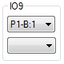 | Set the input for program 9 to P1-B1 |
 |
Setup program 9 to send the full contents of register J |
 |
Set the digit output to D1-A |
 |
Select the Const2tab |
And set the value of register J to 30
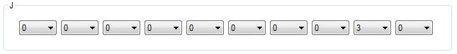
Now we are ready to setup the Function Table
| 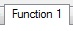 | Select the Function1 tab |
| Be sure that Table 1 is selected | |
|
Turn the power On to this panel |
| 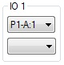 | Set the input for program 1 to P1-A:1 |
| 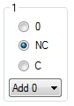 | Configure program 1 by setting its mode to Add 0 and the select switch to NC |
What we have done here is to set the Function Table to execute program 1 when it receives a P1-A:1
pulse. We have also set it to provide a pulse on NC to stimulate another unit to transmit the
argument. We have already setup the Constant Transmitter to send the argument, so all we need to
do is make the connections on the Function Table.
| 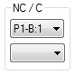 | The Constant Transmitter is expecting a pulse on P1-B1, so set the NC output to P1-B:1 |
| 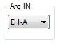 | The Constant Transmitter is sending on D1-A, so set Arg IN to D1-A |
Now we need to setup the Function Table output
| Switch to the Function 2 tab | |
|
Set digit output port A to D1-A |
| 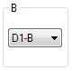 | Set digit output port B to D1-B |
Now we need to setup the actual value that will be looked up. Normally the Portable Function Table
would be set for all possible values of the function, but for demonstration purposes we only need
the actual row corresponding with our argument, which is 30.
| Switch to the PortFunc tab |
The sine of 30 degrees is 0.422618261740699. So scroll down to entry number 30 and enter this value.

At this point the Function Table is all setup to look up our value, now we need to set up two
accumulators to recieve the two 6 digit numbers sent by the Function Table. Here is where an
oddity of the Function Table appears, there is no signal provided by the Function Table that
signals an accumulator to receive the result. The program output from the Function Table actually
occurs after the answer is transmitted! Because of this we need to create a dummy program that
will trigger an accumulator to recieve 2 addition times after the argument is sent to the Function
Table.
Since the Constant Transmitter is sending the function argument, we will use it to start our 2
addition time delay.
|
Switch to the Const1 tab |
| 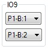 | Set the output of program 9 to P1-B:2This will trigger our 2 addition time delay |
Now to setup the dummy program on one of our accumulators.
 |
Switch to the Acc tab |
 |
Be sure that accumulator 1 is selected |
|
Turn On the power to this accumulator |
| 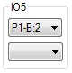 | Set the input for program 5 to P1-B:2 |
| 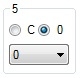 | Configure program 5 to mode 0 and the Clear/Correct switch to 0 |
| 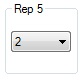 | Set the repeat for program 5 to 2 |
| 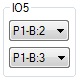 | Set the output of program 5 to P1-B:3 |
That completes our dummy program. A pulse will be sent on P1-B:3 when it is time to receive the
results from the Function Table. Now we need to configure 2 accumulators to receive the results.
Starting with accumulator 1, which we are already on.
| 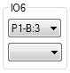 | Set the input of program 6 to P1-B:3 |
| 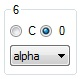 | Configure program 6 to mode alpha and set the Clear/Correct switch to 0 |
 |
Set the alpha input port to D1-A |
Now lets setup accumulator 2.
| 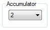 | Be sure that accumulator 2 is selected |
|
Turn On the power to this accumulator |
| 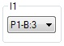 | Set the input for program 1 to P1-B:3 |
 |
Configure program 1 by setting its mode to alpha and Clear/Correct switch to 0 |
| 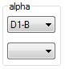 | Set digit input port alpha to D1-B |
At this point we have recieved the value from the Function Table. Go ahead and run your setuip to
check to make sure everything is good up to this point. You should have these two values in the
accumulators:
| Accumulator 1 | 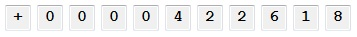 |
| Accumulator 2 |  |
Our answer is spread across two accumulators, now we need to combine the two subresults into our
final result. The first step is to align the numbers so that they are not overlapping each other.
We will start by fixing the number in accumulator 1.
|
Be sure that accumulator 1 is selected |
| 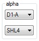 | Since the first number has only 6 digits, 4 leading zeros, we will shift this number to the left 4 places. Set the alpha filter to SHL4 |
Go ahead and run the setup again and take a look at the two accumulators.
| Accumulator 1 | 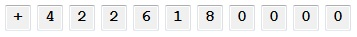 |
| Accumulator 2 | |
The most significant digits are now properly alligned in accumulator 1, but we still have two
digits of overlap. We will fix this by shifting the value in accumulator 2 to the right.
| Be sure that accumulator 2 is selected | |
| 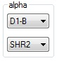 | Set the filther on the alpha digit port to SHR2 |
Go ahead and run the setup again and take a look at the two accumulators.
| Accumulator 1 | |
| Accumulator 2 |
At this point all we have to do is add the two registers together. We will use the output pulse
from the Function Table to trigger the final assembly of our answer.
| Switch to the Function 1 tab | |
| 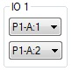 | Set the output for program 1 to P1-A:2 |
|
Switch to the Acc tab |
| Be sure that accumulator 2 is selected | |
| 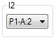 | Set the program input for program 2 to P1-A:2 |
| 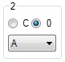 | Configure program 2 by setting its mode to A and its Clear/Correct switch to 0 |
|
Set digit output port A to D1-A |
|
Now to configure Accumulator 1 |
| 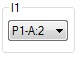 | Set the program input for program 1 to P1-A:2 |
 |
Configure program 1 by setting its mode switch to beta and its Clear/Correct switch to 0 |
| 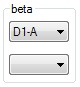 | Connect the beta digit input port to D1-A |
Our setup is complete. Go ahead and run it and verify that you got the correct answer in accumulator 1:
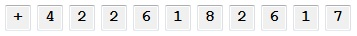